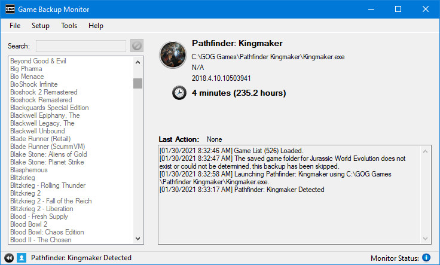
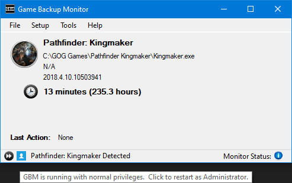
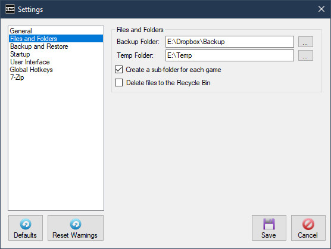
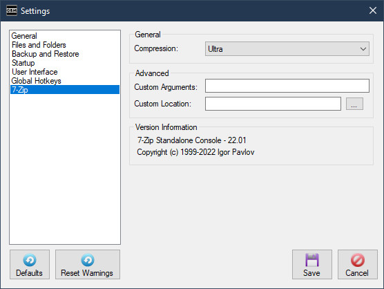
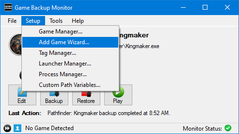
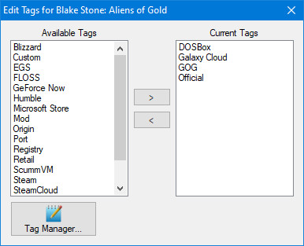

Updated August 22, 2016
Disclaimer:
This manual may contain information about features not available in the current stable release.
If you are having a specific problem, please check the issues list.
Table of Contents:
Game Backup Monitor is a simple, but flexible application that detects games as you play them. Once you finish playing a game, a backup of the saved games will be made automatically using 7-Zip compression. GBM can be used on a single computer, or on multiple computers to effectively add cloud support to any Windows game or application.
Game Backup Monitor was designed with gaming in mind, but it can be used to monitor any application on your PC!
Game Backup Monitor is completely free and open source software.
Game Backup Monitor is currently only available in English.
Verified Operating Systems:
Windows 10, Ubuntu 16.04
These operating systems are tested during development.
Supported Operating Systems:
Windows 8, Windows 7, Windows Vista SP1, Windows XP SP3, Linux
These operating systems are supported, but are NOT tested during development.
Recommended Minimum:
Pentium 1 GHz or higher with 512 MB RAM or more
Disk Space:
2 - 3 MB (Not including prerequisites)
Windows 7 or older requires the .NET 4 (Client Profile)
Linux users, please read the FAQ for package requirements and installation instrutions.
When the Start-up Wizard appears read the instructions and follow along.

You'll need to set a backup folder in which GBM will store all game backups, as well as single data file (gbm.s3db) for tracking and syncing.
If you're planning to use GBM to sync save games between multiple computers this can be set to a cloud folder, network folder, or even a folder on a thumb drive. All computers you're planning to use should be set to this folder in the wizard.
GBM needs to know which games you want to monitor for and how to handle them. The Start-Up Wizard will allow you to download game configurations of your choosing from the official list (work in progress), or set them up yourself via the Add Game Wizard or Game Manager.
Once you have a list of games setup the work is done! GBM will now monitor for each game and run a backup when it's completed.
The main GBM window is mostly for information display, but has some important functions.
The core portion of the window displays information about any game that has been detected, or information about a backup or restore operation currently being performed.
You can view a detailed log of all the actions GBM has performed in the current session by clicking "Show Log". If this log becomes too large over a session it will be auto-saved and cleared.
The right side of the menu bar will show notifications(if enabled) about new saved games to restore. Clicking the notification will clear it for the current session and bring you directly to the Game Manager.
The status bar shows what GBM is currently doing, as well as the monitor status.
The monitor status button on the right can be used to control starting, stopping and cancelling game detection. This can also be accomplished with the File menu and system tray menu.
The button on the left of the status bar indicates if GBM is running in normal mode (Blue User Icon) or as Administrator (Shield Icon). GBM can handle most situations running with normal mode, clicking this button lets you switch to Administrator quickly when it's required. This feature is not available when running in Linux.
A "Cancel" button will appear on the main window during backup & restore operations, clicking this will attempt to cancel the current operation. Please note that clicking Cancel may not have an immediate response, it can take some time before the operation reaches a point where it will be terminated.

The "Cancel" button does NOT undo the operation, cancelling an operation may result in an unusable backup file or a corrupted save game. The "Cancel" button is intended for emergencies only, such as an incorrect configuration causing a lengthy backup of the wrong folder.
This window can be closed the system tray, all important menu options are available from the system tray menu. The system tray icon and menu are not available in Linux.
The Settings screen can be found in the File menu.
On this screen you can change core settings like your backup folder, or tweak a variety of minor settings to customize your experience.
Choose a category of settings by using the list panel on the left side of the window.
The "Set Defaults" button will revert ALL settings to their default.
Clicking Cancel or closing the window will cancel any changes made on this screen.
When modifying the backup folder or any sync settings, be sure to read any warning messages careful.
General

Start with Windows:
This indicates if you want GBM to start automatically when Windows starts. This setting applies to the current user only. This setting is disabled in Linux.
Start to system tray:
This makes GBM minimize to the system tray immediately, instead of showing the main window when it starts. Recommended if you're using the Start with Windows setting. This setting is disabled in Linux.
Start monitoring at launch:
GBM will start detecting games immediately with this setting enabled, otherwise game detection has to be manually started each time you load GBM.
Enable time tracking:
GBM will record and display game session times when this is enabled. When it's disabled no time data is recorded or displayed. Toggling this setting has no effect on time data that's already been recorded.
Enable Syncing:
When sharing a backup folder with multiple computers using GBM, this setting allows you to automatically keep your game data in sync between these computers. It can be disabled if you're using GBM on a single computer for a slight performance boost.
Choose Optional Fields:
Use this button to choose any extra data you'd like to keep in sync between computers. Fields such as Game Path and Icon are not recommended because they may be different on each PC.
Show detection notifications:
This will require GBM to show a standard Windows notification when a game is detected.
Autosave log when max length is exceeded
This will automatically save a copy of the session log each time it's automatically cleared.
Backup and Restore
Backup Folder:
This is the backup folder where GBM stores all game backups and it's remote database.
Create a sub-folder for each game:
This indicates if you want GBM to create a sub-folder in the backup folder for each game. This is handy for keeping your backup folder more organized.
Disable backup confirmation:
This will stop GBM from showing a backup confirmation after each game session.
Show overwrite warning:
This will require GBM to show a confirmation before overwriting any backup file.
Verify backup files with a checksum:
GBM can verify every backup you restore against a checksum made the time the backup was created. It's highly recommended to leave this enabled to protect you from incorrect or corrupted backup files.
Notify when there are new backup files to restore:
GBM can inform you when there are new saved game backups to restore. This is only useful when you're sharing a backup folder with multiple computers.
Backup only when session time exceeds X minutes
GBM can suppress backups when a session time doesn't exceed a specific time frame. This is useful to prevent unwanted backups just because you loaded a game for a few minutes. This setting isn't related to "Enable time tracking" and works independently.
7-Zip
Compression:
This allows you to set the compression level of your backups. The default is Normal. Ultra is highly recommended if you're using a modern PC.
Custom Arguments:
This is an advanced feature that allows you to add custom arguments to GBM's 7za commands.
For example, you could add the argument "-bb1" to make 7-Zip more verbose in the session log.
Please review any available 7za documentation before adding your own arguments.
This feature should be used with caution as some arguments will interfere with the normal usage of GBM.
Custom Location:
This setting allows the use of a custom version of 7-Zip Console (7za).
When left blank the default version of 7za will be used.
Version Information:
This shows the product name, version and copyright information of the 7-Zip utility currently being used by GBM.

Game Manager Quick Overview:
- Add a new game to monitor by clicking the "+" (plus) button below the list box.
- Delete a game by selecting the game(s) from the list and clicking the the "-" (minus) button below the list box.
- Show all games by clicking the "All" option above the list box.
- Show only games with backup data by clicking the "Backups Only" option above the list box. This filter displays ALL games with backup data, even games that are not currently configured.
- Show only games with new save data to restore by clicking the "New Saves Pending" option above the list box.
- You can customize a list of games to display by clicking the "Custom" option above the list box.
- Quickly find games by typing the name in the Quick Filter. This filter is applied on top of any other filter you may be using.
- You can edit the Tags for one or more games by selecting them and clicking the "Tags..." button.
- Restore an existing backup for a game by selecting the game(s) from the list and clicking the "Restore" button.
- You can mark a game as restored without restoring the data by selecting the game(s) from the list and clicking the "Mark as Restored" button.
- You can backup immediately without playing a game by selecting the game(s) from the list and click the "Backup" button.
- You can delete a backup file by selecting the game from the list, choosing a specific backup and clicking the "Delete Backup" button. You may also delete all backups for that specific game.
- You can locate the backup file by selecting the game and clicking the "Open Backup File" button.
- You can view the restore location of the backup file by selecting the game and clicking the "Open Restore Path" button.
- You can import new game configurations from the official list or an XML file using the Import button.
- You can export your game configurations to an XML file using the Export button.
The Game Manager is a central hub for all important GBM functions. However, i'd highly recommend the "Add Game Wizard" to add new games to monitor until you become familiar with GBM.
Game Manager Detailed Overview:
The following is advanced information on each field used to configure a game.
Game Configuration
Name:
The name of the game to monitor. The name must conform to Windows file name standards, it will be automatically filtered for length and any bad characters.
Multiple entries with the same name are allowed to handle games that run from multiple executable files (many older PC games in the 3DFX era for example).
Process:
The name of the game's executable file, without the extension. This IS case-sensitive, if entered incorrectly the game will not be detected. Extensions will be automatically filtered off.
If you don't know what to put here, check the game's "target" in the shortcut or game's folder. Beware of games that use launchers, you do NOT want to monitor the launcher, you want to detect and monitor the game itself.
Multiple entries with the same process are allowed, this is to handle games that use the same name for their executable.
DOSBox and ScummVM games are also supported, but on the specific condition that each game uses it's own copy of DOSBox or ScummVM in a unique location. No special setup is required, you simply need to use "DOSBox" or "scummvm" as the process name and set the "Game Path" under Game Information.
Path:
The location of the save files for the game.
Most games don't tell you where they save. I highly recommend using PC Gaming Wiki or searching common locations such as the game's installation folder, My Documents or AppData for the location of game saves.
This path can be absolute, or relative to the game's executable.
GBM will automatically determine absolute or relative path settings. If the save games are located in the game folder itself, you should always strive to use a path relative to the game's executable, this way your configuration will work on any PC regardless of where a game is installed. If you don't know what that means then I highly recommend using the "Add Game Wizard" to add new games.
Save Entire Folder:
This indicates if GBM should backup the entire folder indicated in the path. If you don't really know what files are important to be saving, just tick this box. Choosing this option will disable and clear any Include Items.
Save Multiple Backups:
This indicates if you want GBM to keep multiple backups for that game. When using this option you can set a limit on the amount of backups to keep, this defaults to 5. GBM will delete the oldest backup(s) automatically when new ones are made or if the limit is reduced.
Include and Exclude Items:
You can configure which file types, specific files or sub-folders should be included in or excluded from the backup using the Include / Exclude Builder.
Click the Include Items... or Exclude Items.. button to launch the builder.
A value in brackets on the button indicates the amount of items being included or excluded. If either button is bold, this indicates that there are changes that haven't been saved.

The left side of the window (Saved Game Explorer) shows the current game's save folder in a Windows Explorer type view. If this area is blank it's because GBM couldn't determine the save folder or it doesn't currently exist.
The right side of the window (Current Items) shows any items being included or excluded.
You can add new items to include or exclude by ticking the check boxes beside any files or folders in the Saved Game Explorer, and using the right arrow button to move them into the Current Items list.
When you choose a file to include or exclude, GBM will use the file type extension instead of the individual file name. You can toggle this behavior using the "Options" section under the Saved Game Explorer.
You can remove any items you've added to the Current Items list by selecting them and using the left arrow button. You can also right-click items and use the "Remove" command.
You can edit any items you've added by right-clicking them and choosing Edit. Advanced users may want to edit items and add wildcards to refine their configuration.
You can add custom items by right-clicking on any blank part of the Current Items list and choosing "Add Custom Item"
And finally if you prefer the old hardcore way of doing things, you can click "Raw Edit" and simply edit a colon delimited list of items.
Game Information
Game Path:
This is the path to the game's executable file. In most cases GBM will auto-detect this information, but it can be set manually.
The path is used to determine the save location for games with a relative save path. It is also used to properly detect games that share process names, like DOSBox and ScummVM games.
Company:
You can manually set a company name to be displayed when the game is detected. This takes priority over the company information detected from the game's executable.
Version:
You can manually set a version value to be displayed when the game is detected. This takes priority over the version information detected from the game's executable.
Icon:
You can manually set a icon to be displayed when the game is detected. This takes priority over the icon used by the game's executable.
Tags
You can use Tags to organize your game list. You can manage (Create, Edit or Delete) any Tags you want to use from the Setup menu or inside the Game Manager.

Tags allow you to filter the games you want to view in the Game Manager or the configurations you may want to Export to an XML file.
Select the tags and use the appropriate buttons to add or remove them.
Important notice regarding tagging multiple games:
When you're modifying tags for multiple games, the "Current Tags" list shows every tag used by each game you have selected, this doesn't mean those tags are already applied to every game selected. If you'd like to apply a tag to each selected game and it's already used, simply remove it then re-add it.
Monitor Settings
Monitor this Game:
This box indicates that GBM will actively monitor for this game.
Monitor Only (No Backup):
This box indicates that GBM will not trigger a backup when the game is closed.
Backup Information
Backup Data:
This field lists all the available backup data. You may select older entries if you need to restore or delete it.
Local Data:
This displays information about the last backup made or restored on the current computer.
Backup File:
This displays the backup file name and file size.
Restore Path:
This displays the location the backup file will restore to, this may be an absolute or relative path.
GBM has the ability to automatically search your hard drive for a specific game when it's required.

- GBM begins searching your root drive immediately.
- You can switch the drive being searched by using the combo box.
- Results are displayed in the list box as the search continues.
- Choose the correct path from the list box and click OK.
Importing game configurations is done from the Game Manager.
You can import pre-made backup configurations from the official list or an XML file exported from GBM.

- The import window only shows new configurations, it will not display games you've already configured.
- You can toggle selecting and de-selecting all available configurations by clicking the Select All checkbox.
- You can search for specific games or by tag using the "Filter" field. The filter is applied as you type, remove all text from the field to clear the filter.
- The bottom of the import window shows how many configurations you have selected and how many are currently displayed.
- GBM remembers all configurations you've selected, even if they are not displayed by your current filter.
This screen allows you add an unlimited number of custom path variables to use in the configuration of your games.

Some applications and games store save files in common locations that can be slightly different on each computer, this feature allows you account for that and share configurations between any computer.
For example, games designed for Valve's Steam service can use the Steam "userdata" folder as a common save location.
The problem with this location is that Steam can be installed in many different locations on a computer, as well as every Steam user having a different ID folder, therefore every computer will save in a different location and need a unique configuration.
But if we use the custom path variable feature we can create a variable for this location, such as "Steam User Data" and point it to the steam\userdata\*your id* folder.
Once we do this, any application configured to use that folder will use the variable instead.
Any another computer using that configuration simply has to setup the same variable and point it to the proper folder on their computer.
This is an advanced feature and can be completely ignored by most users, the official pre-configured list will never contain games that use a custom path variable.
Clean Local Manifest
This is used to clean up the local manifest of any backup information that is no longer relevant, based on the information in the current backup folder. When backup data is deleted from one computer, other computers using GBM may still be storing data about the deleted backup that is no longer useful. The only time this tool shouldn't be used is if you are alternating between backup folders, such as using a cloud folder for small backups and external drive for large backups.

Compact Databases
This is used to rebuild GBM's databases to use an optimal amount of disk space. It should only be used when databases are reaching a noticably large size.
Log -> Clear
This is used to clear the current session log.
Log -> Save
This is used to save the current session log to a text file.
While using the Game Manager or exporting your game list to an XML file, you'll have the option to use a custom filter.
You can choose to filter by Game Information OR by Tag, you can't filter by both at the same time.
Game Information
- You can filter by the Name, Process and/or Company fields.
- GBM uses a case-insensitive partial search to match any text you've entered in the filter fields.
- You can choose between the AND / OR options to further refine your filter.
- If no text is entered on any field in this filter, GBM will return all games.
Tag
- Choose the Tags you want to filter by and use the appropriate buttons to add or remove them.
- There are different options available when filtering by tag:
- Any Tag - This will include games using ANY of the tags you have chosen to filter by.
- Example: You have two games tagged as #Official, one game is also tagged as #GOG and the other is also tagged as #Steam. If you filter by "Any Tag" and choose #Official and #GOG, both games will be included since both included #Official.
- All Tags - This will only include games using ALL of the tags you have chosen to filter by.
- Example: Using the same example games above, if you filter by "All Tags" and choose #Official and #GOG only one game will be shown, since only one game included both the #Official and #GOG tag.
- Any Tag - This will include games using ANY of the tags you have chosen to filter by.
- If you choose no tags to filter by, GBM will return all games with no tags.
GBM has an optional feature that will sync all applicable game list data between computers that share the same backup folder.
All computers are synced to a single master list stored in the backup folder.
This allows all computers with GBM to use the same game list and session time information!
Syncing is enabled by default but can be disabled if you're using GBM on a single computer.
- The sync feature can be disabled or modified from the "Settings" screen.
- When changing any sync settings, GBM will detect if game list data exists and ask how you'd like sync it.
- A sync from master to local occurs when GBM is loaded, and any time GBM detects another application has changed the master list.
- A sync from local to the master occurs anytime the local game list is changed or when the session time for a game is updated.
Only one game can be detected at a time and most GBM features are locked until that game is closed.
All configuration data for this application is located in \Users\*Your User Name*\AppData\Local\gbm (Windows) /home/*Your User Name*/.local/share/gbm (Linux) as well as a remote data file (gbm.s3db) being stored in the backup folder.
GBM's copy of 7za.exe (Windows) or /usr/bin/7za (Linux) must exist for the application to start.